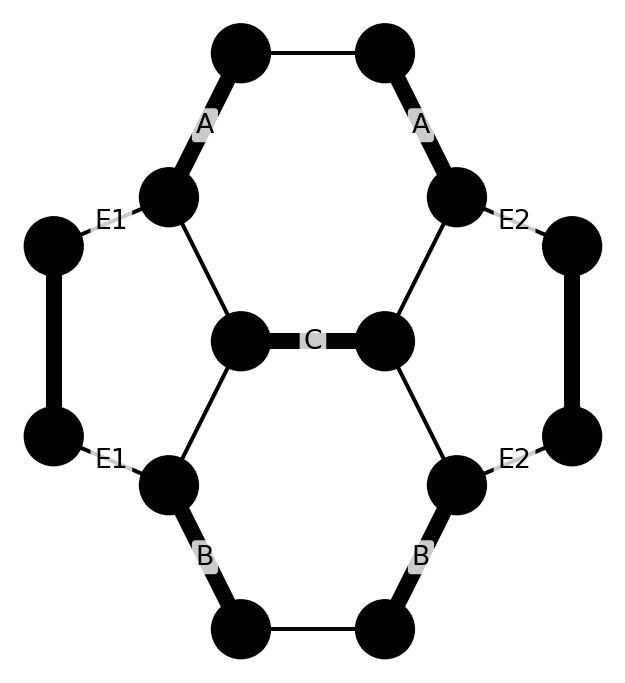
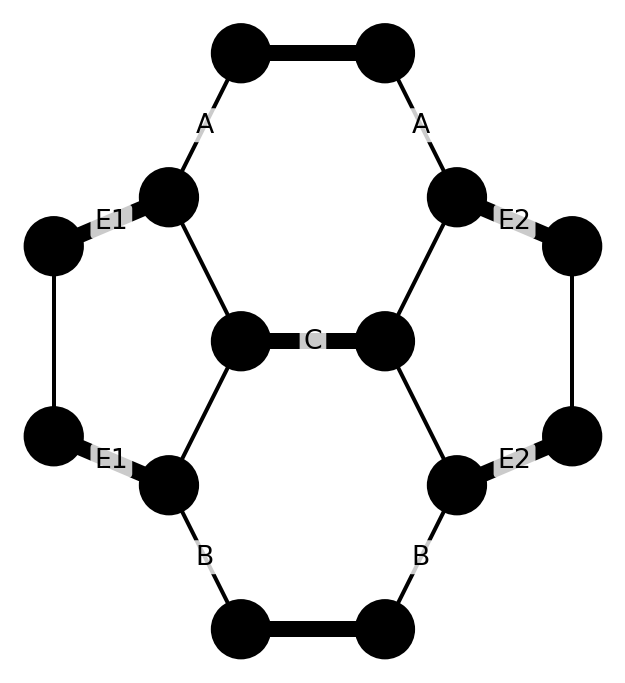

What is needed now is a way to remove the parasitic resonances. Based on the observation that, generally, the more complex a conjugated molecule is, the more resonance modes it possesses, it should therefore be possible to simplify the molecule. That is to say, reduce the complexity of the bonds in order to keep only the intended resonance modes.
What is needed now is a way to remove the parasitic resonances.
Based on the observation that, generally, the more complex a conjugated molecule is, the more resonance modes it possesses, it should therefore be possible to simplify the molecule. That is to say, reduce the complexity of the bonds in order to keep only the intended resonance modes.
Simplifying the Molecule
If we take the “Letter Envelope” structure and connect the two outputs of the NOR gates together, we obtain the 4 intended resonances plus the 2 expected parasitic resonances.
Yet, more complex molecules require far more advanced transformations. It is not always as simple as removing a few bonds.
Unfortunately, At present, no general algorithm exists to automate this process. It remains an active area of research.
Quantum Couplers
Another approach is to filter the connections directly, since that is where the parasitic resonances originate.
Ideally, we would insert an intermediate filter molecule along the interconnect to ensure that both branches always maintain the exact same logical state.
However, such a purely chemical filter cannot work: because it must itself be open at both ends to connect into the circuit, it will inevitably develop the exact same parasitic resonances. We would simply be reproducing the initial problem.
To break this loop, we must rely on a different physical mechanism: quantum and electrostatic induction.
When two conjugated bonds are brought physically close to one another without touching, their \(\pi\)-electron clouds interact across space. Just like electrical induction in classical physics, the alternating oscillation of electrons in one bond exerts an electrostatic and quantum exchange force on the neighbor:
* If one bond shifts into a double bond (\(\pi\)-density), its local electric field repels or aligns the electron density of the adjacent bond.
* The two lines synchronize their states through the vacuum without sharing a single physical atom.
This wireless, contact-free bridge is what we call a Quantum Coupler or Coupler in short.
The coupling strength follows a strict physical scaling:
1. Shorter distance = stronger coupling: As the spatial gap narrows, the interaction strength increases drastically.
2. More bond pairs = higher efficiency: Chaining multiple coupled pairs in parallel reinforces the coherence.
By keeping the distance short enough and using enough parallel bond pairs, the synchronization efficiency can approach virtually 100%.
Typology of Couplers
Several physical geometries can be engineered:
Parallel Coupler: The simplest design to build. The two branches of the dual-rail interconnect are simply routed parallel and brought into close physical proximity.
The blue dashed line is here to show that there is a coupling between bonds.
Series Coupler: The molecular equivalent of the schematic of an electrical transformer. Two closed conjugated loops are placed side-by-side, transferring logic states purely through mutual resonance induction.
\(\pi\)-Stacking Coupler (Face-to-Face): Instead of lying in the same 2D plane, conjugated rings are stacked directly on top of each other (via aromatic \(\pi\)-\(\pi\) stacking). This vertical configuration is exceptionally powerful for routing signals out of the plane and designing three-dimensional (3D) molecular circuits.
Beyond filtering parasites, couplers solve another major engineering hurdle: clean fan-out. They allow a single logic gate to cleanly broadcast its output to multiple gates without any physical wiring tangles or parasitic feedback.
Finally Success?
Yes! This time, the foundation holds.
Every essential building block has now been identified: from fundamental carbon junctions and resonance states to dual-rail interconnects, universal NOR logic, and parasitic-filtering couplers. The baseline theory is established, mathematically coherent, and fully functional!
“But wait…” the skeptic might object. “This is still just theory on paper, isn’t it? Some concepts seem radically counterintuitive. Where is the tangible physical prototype?”
First comes the blueprint, then comes the machine.
Historically, every monumental breakthrough in computing began as quiet derivations on a notepad. Alan Turing did not begin with silicon microchips, and quantum computing existed purely on chalkboards decades before the first qubit was frozen in a lab.
There are still vital, pioneering concepts waiting to be developed — and that is precisely what the upcoming posts will unpack.
Research is a journey of relentless patience; one must embrace the discipline of advancing one careful step at a time. Once the theoretical landscape is mapped, designing the physical architecture will become infinitely clearer.
Nevertheless, we must always keep a vigilant eye on physical reality — if only to ensure our feet remain firmly planted in the realm of the possible.
With our foundation established, this is the perfect moment to confront the toughest questions head-on. Let us address the most common scientific objections below!
Common Objections
“A molecule featuring a three-membered ring would be energetically unstable due to extreme ring strain.”
Quite right! If you ever read a headline announcing that a chemist has isolated a naked, three-membered conjugated carbon ring folded into an “envelope,” it would be nothing short of a miracle. The angle strain alone would tear it apart under ambient conditions.
The molecular graphs presented here are functional topologies — logical schematics rather than literal chemical blueprints.
However, remember our golden rule of interconnects: inserting an even number of carbon atoms into any bond preserves the exact logical identity of the circuit.
As a practical rule of thumb in molecular architecture: if a topology suffers from geometric strain or a lack of space, expand it by inserting pairs of carbon atoms.
By doing so, the bond angles relax toward the natural \(120^\circ\) planar geometry of stable \(sp^2\) carbon. What begins as an overly strained toy graph eventually transitions into a thermodynamically stable, synthesizable molecule at ambient temperature and pressure.
Take our strained “Letter Envelope” model as a prime example:
1. In its minimal form, the envelope contains tight, highly strained three- and four-membered triangular cycles.
If we systematically insert two carbon atoms into the perimeter bonds of each strained loop, the tight angles open up.
The strained triangles gracefully blossom into stable five- and six-membered rings — yielding the planar polycyclic architecture known as Pyracylene (\(\text{C}_{14}\text{H}_8\)).
all_resonances = mol.resonance()for i, res_mol inenumerate(all_resonances): res_mol.draw(scale=1.5)


Pyracylene is not a theoretical fantasy: it is a real, well-documented molecule synthesized in organic chemistry laboratories (and famously observed as dynamic defects in graphene sheets under electron-beam irradiation).
It must be noted, however, that pyracylene has often been characterized by physical chemists as “borderline aromatic” (owing to the delicate balance between its aromatic benzene-like cores and its antiaromatic cyclooctatetraene-like peripheries).
Which brings us directly to the next objection…
“Several of these proposed topologies are non-aromatic, meaning their resonance structures are by no means equiprobable.”
This is a profound physical objection grounded in Hückel’s Rule of Aromaticity.
In physical chemistry, a planar, cyclic conjugated ring is exceptionally stable (aromatic) if it possesses \((4n + 2)\) delocalized \(\pi\)-electrons (such as the 6 \(\pi\)-electrons in benzene).
Conversely, when a ring contains \(4n\)\(\pi\)-electrons (like cyclooctatetraene with 8 electrons), it enters an antiaromatic, electronically frustrated regime. To escape this high-energy penalty, the molecule undergoes a conformational distortion: it buckles out of the plane, warping into a non-planar geometry — much like a potato chip or a saddle.
Once planarity is broken:
* The overlap between adjacent \(p_z\) atomic orbitals collapses.
* The continuous \(\pi\)-cloud fragments into localized, unequal bond lengths.
* The resonance states split into widely different energy levels, destroying the uniform probabilistic branching required for clean logic transitions.
Constraining computational designs strictly to Hückel-compliant \((4n + 2)\) rings would tend to cripple our architectures. Efficient logic circuits inevitably demand topologies that violate standard aromatic electron counts.
How do we overcome this energetic divergence? By enforcing planarity through mechanical tension.
If non-aromatic rings buckle because of electronic strain, we can physically prevent that distortion by anchoring the molecule within an external structural scaffold and adjusting its perimeter tension — much like stretching and tuning a drumhead.
When clamped flat by external mechanical boundaries:
1. Out-of-plane buckling modes are geometrically suppressed.
2. Orbital overlap is uniformly restored across all carbon vertices.
3. The competing resonance configurations are forced into equipotential energy levels.
Several realistic nanotechnology platforms could serve as this planarizing frame:
Perforated Graphene Frameworks: A pristine monolayer graphene sheet on a support can be nanolithographically patterned with nanopores. Molecular logic units can then be suspended across these nanometer-scale voids, anchored at the edges using natural heteroatomic “clips” — specifically divalent oxygen bridges (\(C-O-C\), ether linkages) or trivalent nitrogen junctions (\(C-N-C_2\), tertiary amine nodes) standard in organic synthesis.
Protein and Enzyme Scaffolds: In biological systems, enzymes frequently force substrate molecules into chemically unnatural, high-energy planar transition states through rigid hydrophobic binding pockets. Supramolecular protein cages could act as macroscopic templates, mechanically clamping carbon logic circuits into the required planar topology.
Atomically Flat Substrates (On-Surface Template Synthesis): A proven technique in modern molecular electronics consists of depositing molecular precursors onto ultra-flat crystalline surfaces—such as gold \(Au(111)\) or thin insulating layers of sodium chloride (\(NaCl\)) on copper. Strong interfacial van der Waals forces act as an electrostatic press, physically flattening the carbon backbone against the substrate and completely quenching out-of-plane buckling modes.
Covalent Organic Frameworks (COFs): Rather than manually carving cavities into existing materials, one can synthesize self-assembling 2D crystalline polymer sheets known as COFs. These frameworks naturally form rigid, highly ordered porous networks. Molecular logic units can be engineered as modular tiles that integrate seamlessly into the lattice pores, leveraging the surrounding network as a built-in, thermally stable rigid chassis.
Nanotube Suspension Tensors: Suspending the molecular network between parallel single-walled carbon nanotubes (SWCNTs) allows for active, dynamic mechanical tuning. By applying controlled electrostatic fields or piezo-actuation across the nanotube anchors, the external tension on the circuit can be adjusted in real time—the nanomechanical equivalent of tuning pegs on a guitar.
Admittedly, experimental optimal scaffolding techniques remains an open frontier. What matters at this stage is that viable physical pathways exist: there are no thermodynamics violation; we simply need to engineer the boundary constraints.
“Larger molecular networks would suffer from rapid environmental decoherence in any realistic, noisy medium.”
There is indeed a fundamental spatial threshold — a coherence length — beyond which fragile quantum entanglement decays into classical noise.
Crucially, this coherence length is not a fixed, rigid constant: it is heavily dictated by thermal thermodynamics.
While cooling the system down to cryogenic temperatures (\(4\ \text{K}\) or millikelvin regimes) would trivially expand the coherence horizon across tens of micrometers — instantly covering millions of interconnected gates — our core design philosophy refuses the crutch of bulky, energy-expensive dilution refrigerators. The ultimate objective remains robust, room-temperature operation.
In such environments, noise originates primarily from two physical culprits:
1. Lattice Vibrations (Phonons): Thermal agitations cause the carbon-carbon bonds to flex, stretch, and twist at picosecond timescales (\(10^{-12}\ \text{s}\)), disrupting the delicate phase relationships of the delocalized \(\pi\)-electron wavefunctions.
2. Magnetic Spin Fluctuations: Uncontrolled nuclear spins (such as trace \(^{13}\text{C}\) isotopes or surrounding solvent protons) generate fluctuating local magnetic fields that dephase electron spins.
In pristine conjugated materials (such as graphene or polyenes) at room temperature, the electron mean free path and ballistic quantum coherence radius typically span from tens to hundreds of nanometers (roughly 50 to 500 carbon rings). Across a macroscopic chip, this boundary would inevitably be crossed.
But here lies the remarkable resilience of molecular architectures: decoherence does not kill the machine.
As long as the molecular network remains electrically insulated from parasitic ground leaks, it does not catastrophically shut down when quantum coherence is lost. Instead, it undergoes graceful degradation, seamlessly transitioning from coherent quantum computing into massively parallel probabilistic computing.
While a probabilistic p-bit network lacks the exponential speedup of pure quantum computation, it remains a formidable thermodynamic supercomputer — capable of solving problems at the sub-picosecond physical timescale of electron motion, while operating near the fundamental thermodynamic limits of minimal energy dissipation.
Note however that in any realistic large-scale molecular circuit, computation inherently operates across two spatial tiers:
* Local Scale (Quantum Islands): Within individual logic gates, rings, and tightly coupled blocks (spanning a few nanometers), operation is 100% coherent and quantum.
* Global Scale: Between distant sub-units separated by long interconnects, the signal propagates as incoherent, probabilistic bitstreams.
So now the ultimate architectural challenge is straightforward: how do we expand the quantum islands until they engulf the entire circuit?
Several physical mechanisms can push the coherence horizon across the entire network:
Topological Protection & Chiral Edge Modes (Quantum Hall Analogs): By engineering the graph topology to mimic the Haldane model or quantum spin Hall phases, conduction electrons are confined to robust, unidirectional edge states. In these topological conduits, back-scattering against thermal phonons is physically forbidden, dramatically stretching the coherence length across macroscopic boundaries.
Passive Stabilizer Couplers (Noiseless Subsystems): Our inter-branch couplers act as hardware-level, passive quantum error-correcting codes. By enforcing mutual parity between dual-rail lines through electrostatic and quantum exchange energy, the coupler creates an energetic penalty against phase-flip and bit-flip errors. Noise that attempts to perturb a single branch is energetically suppressed, confining quantum information inside an intrinsically protected noiseless subsystem (decoupling subspace) without requiring active error-detection cycles.
Isotopic Purification: Synthesizing the carbon framework from \(99.99\%\) isotopically pure Carbon-12 completely eradicates the nuclear spin bath. The \(\pi\)-electrons travel through a magnetically silent vacuum, extending room-temperature spin coherence by orders of magnitude.
Phononic Bandgap Engineering: Designing the surrounding scaffolding (such as periodic perforated graphene or COFs) as an acoustic metamaterial creates a phononic bandgap. By acoustically isolating the molecular circuit, the specific vibrational frequencies responsible for thermal dephasing are physically barred from penetrating the computational core.
Ultrafast Femtosecond Dynamics: Molecular \(\pi\)-electron resonance and charge redistribution occur on the femtosecond scale (\(10^{-15}\ \text{s}\)), completing logical transitions orders of magnitude faster than the picosecond onset of thermal lattice vibrations. The computation finishes before the environment even notices it has begun.
“How are the physical inputs and outputs concretely interfaced with the rest of the circuit?”
This is the classic “interconnect problem.” A computational model is useless if it remains trapped in an isolated mathematical vacuum. We must be able to write an input state into a carbon bond and read the output state from another bond.
Fortunately, we do not need to invent new physics to interface with carbon bonds. Modern nanotechnology and physical chemistry already offer an exhaustive toolkit, which can be grouped into five distinct physical categories:
1. Mechanical Methods (Strain & Geometry)
The bond state is dictated by physically tuning atomic distances (\(1.54\ \text{Å}\) for single bonds vs \(1.34\ \text{Å}\) for double bonds).
* Writing (Inputs): Nanoscale piezoelectric actuators or Atomic Force Microscope (AFM) tips can gently stretch or compress boundary bonds, mechanically clamping them into an elongated single bond (\(0\)) or a contracted double bond (\(1\)).
* Reading (Outputs): Non-contact AFM (NC-AFM with a CO-functionalized tip) can directly “feel” and image the electronic bond order of terminal bonds with sub-angstrom resolution.
2. Chemical & Electrochemical Methods (Bond Valency)
The bond state is controlled by reversibly adding or removing atoms and electrons.
* Writing (Inputs): Reversible protonation (attaching a single hydrogen ion \(H^+\)) saturates an input carbon atom into a four-way \(\sigma\)-node, permanently locking the adjacent conjugated pathway into a single bond (\(0\)). Removing the proton frees the \(\pi\)-electron, restoring the double-bond state (\(1\)).
* Reading (Outputs): Double bonds are chemically far more reactive than single bonds (e.g., in cycloaddition reactions). The output state can trigger or inhibit a localized chemical cascade.
Information is transferred across the vacuum using local electric fields (Stark effect) and our Couplers.
* Writing (Inputs): A metallic nano-gate positioned a single nanometer away applies a local voltage bias. The electrostatic field polarizes the \(\pi\)-electron cloud, pushing double-bond density into the target bond without any physical contact.
* Reading (Outputs): A Single-Electron Transistor (SET) or capacitive sensor placed beside the terminal bond detects the minute electrostatic charge shift caused by single vs double bond transitions.
4. Optical & Photonic Methods (Speed of Light)
Photons drive transitions and read results non-destructively.
* Writing (Inputs): Molecular photoswitches (such as azobenzene or diarylethene units) bonded to the input lines can be flipped between two conformations using specific wavelengths of light (UV vs visible laser pulses), injecting a \(0\) or \(1\) in femtoseconds.
* Reading (Outputs): Fluorescence spectroscopy. When the output circuit resolves to a continuous conjugated path (\(1\)), it fluoresces brightly under laser excitation; if the path is broken into single bonds (\(0\)), fluorescence is quenched. The output bit is read out with an ordinary photodetector.
5. Magnetic & Spintronic Methods (The \(^{13}\text{C}\) Nuclear Bridge)
Leveraging magnetic resonance and nuclear spins for ultra-stable read/write operations.
* Writing (Inputs): Radiofrequency (RF) pulses flip a designated terminal \(^{13}\text{C}\) nuclear spin, which then imprints its logical state onto the surrounding \(\pi\)-electrons via hyperfine contact.
* Reading (Outputs): Nitrogen-Vacancy (NV) diamond magnetometers can optically detect the nanoscale magnetic signature of the output bond state non-invasively at room temperature.
Summary: Matching the Interface to the Architecture
We do not have to rely on a single interface. The physical mechanism can be chosen to fit the exact purpose of the machine:
Application Target
Optimal Input Method
Optimal Output Method
Key Advantage
Laboratory Prototyping
Piezoelectric / AFM tips
Non-Contact AFM (NC-AFM)
Direct, atomic-scale physical visualization
High-Speed Solid-State Chip
Electrostatic Nano-gates
Optical Fluorescence / NV-Center
Ultrafast, non-contact femtosecond operation
Autonomous Biological / Wet Computing
Chemical Protonation (\(H^+\) / pH)
Localized Enzyme / Redox Reactions
Fully autonomous, liquid-compatible, zero power
The interconnect hurdle is therefore not a conceptual dead-end. The molecular circuit can seamlessly plug into classical electronics, photonic waveguides, or biochemical environments depending on how we choose to bridge the scales.
Speculations & Wild Thoughts
Could an epileptic seizure be a molecular circuit bug?
In the brain, synapses are packed with aromatic carbon rings. What if they use π-electron resonance for ultra-fast signaling? If a tiny molecular coupler stretches just a little too far, it breaks. In our circuits, that single broken coupler unleashes parasitic resonances that invade the entire network. Could an epileptic seizure simply be this exact bug happening at a biological scale — a runaway chain reaction of molecular noise that locks millions of synapses into a synchronized freeze?
Beyond \(\pi\)-Logic:
Back in 2006, M. H. van der Veen demonstrated that electrons shifting within conjugated molecules could perform logical operations (“\(\pi\)-Logic”). However, that paradigm relied on active laser pulses to mechanically drive each gate through external photo-switching. My approach takes the fundamental next step: the internal computation requires no active pumping or external triggers. Once boundary conditions are set, the conjugated network computes natively, passively, and reversibly through spontaneous resonance relaxation. External interfaces — whether electrostatic, optical, or mechanical — are strictly reserved for reading and writing at the boundaries, leaving the internal logic to resolve itself purely through the self-consistent physics of the carbon backbone.
Penrose, Paramecia, and Sub-Cellular Computing:
A single-celled paramecium has no neurons, no synapses, and no brain. Yet, it swims, avoids obstacles, hunts for food, mates, and learns from its environment. As Sir Roger Penrose and Stuart Hameroff famously wondered: if a neuron is just a binary on/off switch, how does a brainless, single cell compute complex behaviors? The answer may lie within: a single neuron is not a simple bit—it is already a complete molecular supercomputer. Information processing does not start at the neural network level; it is fundamentally driven by the quantum resonance of conjugated \(\pi\)-systems inside the cell’s cytoskeleton.
The Slime Mold Paradox (Mazes Without a Brain):
The slime mold (Physarum polycephalum) is a single giant cell without a nervous system. Yet, it famously solves mazes, re-creates the optimal topology of Tokyo’s railway network, and remembers past experiences. Standard biology describes this as passive chemical diffusion. But what if the cell’s internal protein lattice is actively executing logic? A molecule can compute by global wave relaxation through boundary conditions. The slime mold might be doing the exact same thing on a macroscopic scale: solving optimization problems not by stepping through lines of code, but through the natural physics of conjugated resonance.
Plant Memory and the Carbon Web:
Plants lack a nervous system, yet the sensitive plant (Mimosa pudica) can learn to ignore harmless falls and retain that memory for weeks. Trees synchronize resource distribution across vast fungal networks and anticipate daily solar cycles long before dawn. Rather than relying on fragile electrical action potentials, plants may process and store environmental information directly within their rich architecture of aromatic compounds and carbon lattices. Life spent nearly four billion years computing with carbon bonds before it ever evolved a brain. Neurons might be high-speed cables connecting nature’s ancient, organic computers.


 Speculations & Wild Thoughts
Speculations & Wild Thoughts